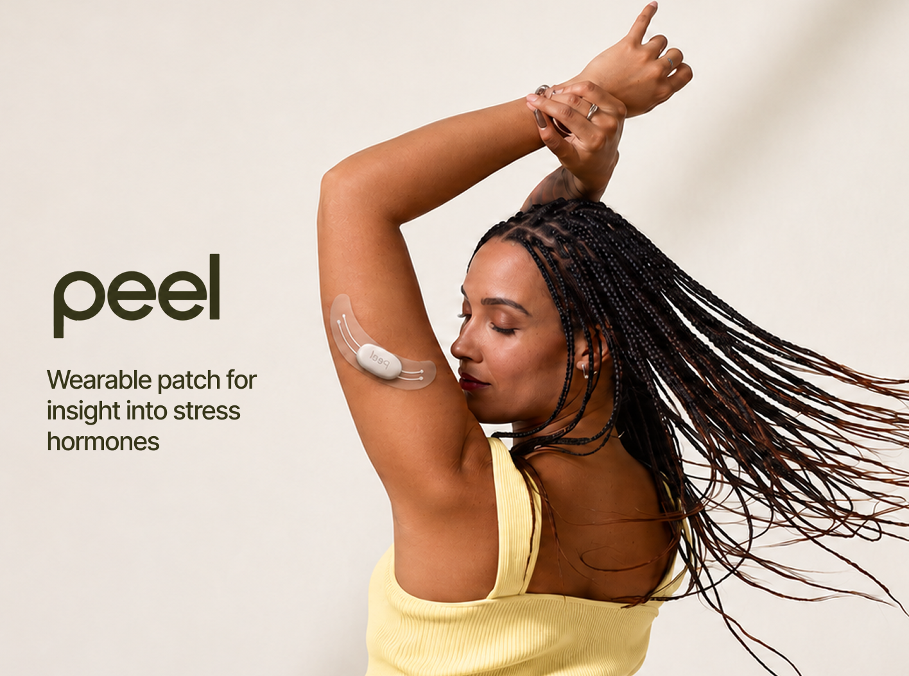
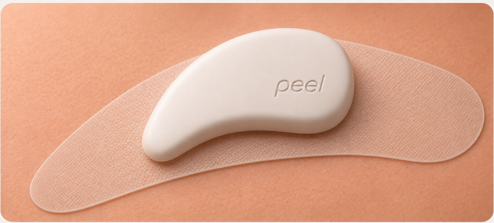
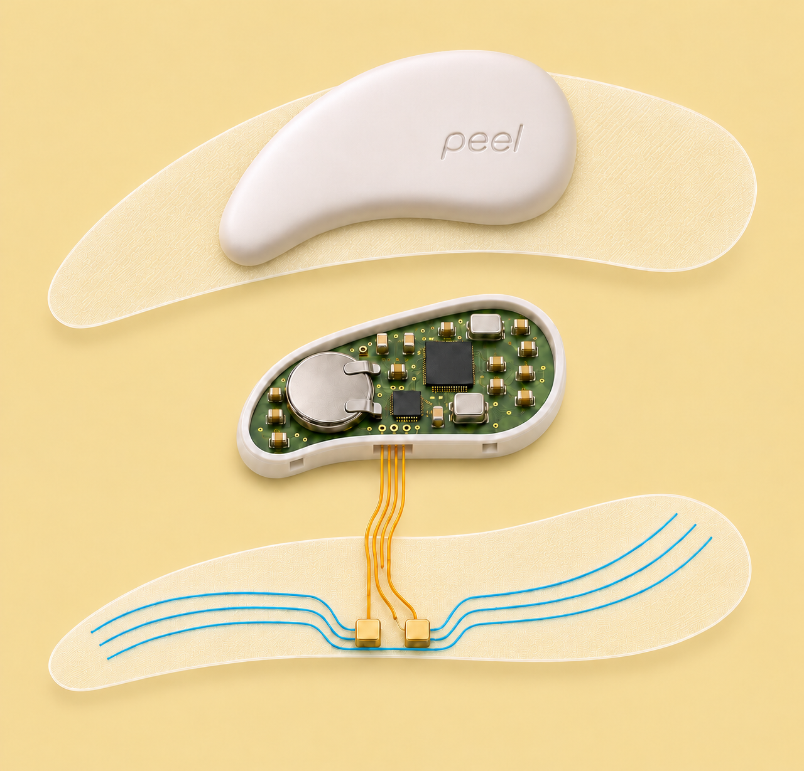

Sweat Collecting Patch for Stress Hormone Monitoring
A graduate PM course at USC tasked us with pitching a product in a space we believe will grow exponentially. Peel is my team’s response.

Where I led
For the draft we submitted, I was the lead PM on a team of 6. Within this team, I was the main contributor to the problem space research, solution product research, product and brand design, competitive analysis, market opportunities, and product strategy.
Using a week of my personal time, I advanced and refined every component beyond the class requirements, elevating the pitch to a professional level and creating the Project Document. My next step is to create a second draft of the deck to reflect these changes visually.


Deliverables

“[Breeze] excels in research and at creating and delivering presentations. Very happy to work together on this project.”
Team member
Reflection
The project afforded me the opportunity to synchronously exhibit skills from my culminating coursework in product management and my interest in biosensors.
One challenge I faced was quantifying an emerging market in which specific established benchmarks have yet to emerge. I was able to create defensible estimations by triangulating data from adjacent markets, analyzing evolving consumer trends, and integrating bottom up calculations grounded in the data from our target customer segment. This experience highlighted that in any emerging tech space, forecasts will be built on small amounts of recent data, and as a result, the ability to articulate logical, evidence-based arguments becomes especially consequential when seeking to establish credibility with potential investors and stakeholders.